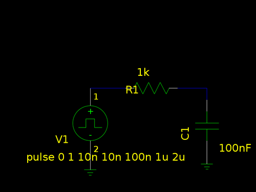
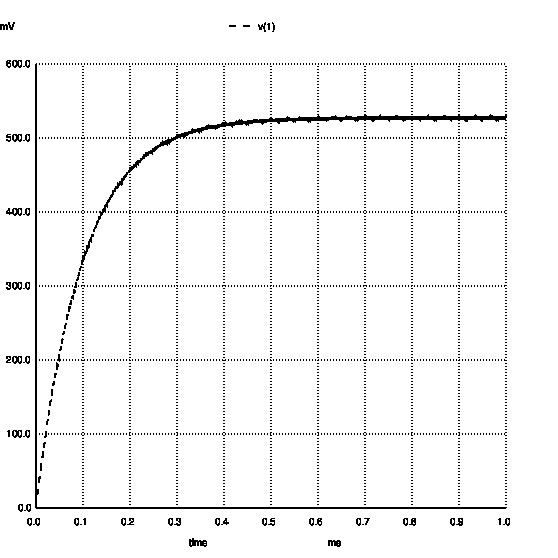

体验一下 gEDA
一直对win下面的电路仿真软件有点意见，需要各种各样的license，而且用法都比较复杂， 可能比较适用于对电路比较感兴趣，并坚持用一种仿真软件的人。我偶尔一时性起会对电路 问题表示一下兴趣，想看看几个电阻电容后面的波形是什么，只是希望有个简单能够保存的工具， 又不想安装大型软件，如MultiSim等。于是找了一圈，还是用开源的玩玩。
gEDA安装下来只有几个M，与其他的软件真是不能比，但够用就行，KISS。 电路仿真基本上都是基于Spice的，以版本不同，但都大同小异，网上有关于Spice的手册， 使用gEDA进行仿真也有相关的说明。gEDA tutorial
参考这些说明，做了一个简单的RC滤波仿真。
使用gschem画原理图
这个过程和其他软件一样，但主要就是用一种直观的方式把连接关系标示清楚，以便得到网表。 这里是初步实验，就用一个RC滤波，示意一下。

主要需要进行refdes和value的标示，refdes表示在网表中的名称，value表示数值， 这里用一个脉冲方波看看rc的滤波结果。
使用gnetlist生成网表
调用命令 gnetlist -g spice-sdb -o rc.net rc.sch
这样就生成了网表文件，-g可以指定生成文件的格式。
* gnetlist -g spice-sdb rc.sch
*********************************************************
* Spice file generated by gnetlist *
* spice-sdb version 4.28.2007 by SDB -- *
* provides advanced spice netlisting capability. *
* Documentation at http://www.brorson.com/gEDA/SPICE/ *
*********************************************************
*============== Begin SPICE netlist of main design ============
V1 2 0 pulse 0 1 10n 10n 100n 1u 2u
C1 0 1 100nF
R1 2 1 1k
.end
使用ngspice进行电路仿真
ngspice rc.net
在生成的网表文件中增加语句
.TRAN 1us 1ms
这样就可以直接进行电路仿真，输入run就可以。结果中可以看到Node的信息：
Node Voltage
---- -------
2 0
1 0
v1#branch 0
这样可以打印print或者画图plot将电压变换情况，比如plot V(1)

有时间整个Buck电路看看。
blog comments powered by Disqus
介一个IT民工甲，Firmware，嵌入式，数字电源，伪Geek，
80后伪奋青，Canon 450D，Arch Linux，Kindle
www.jieyige.com